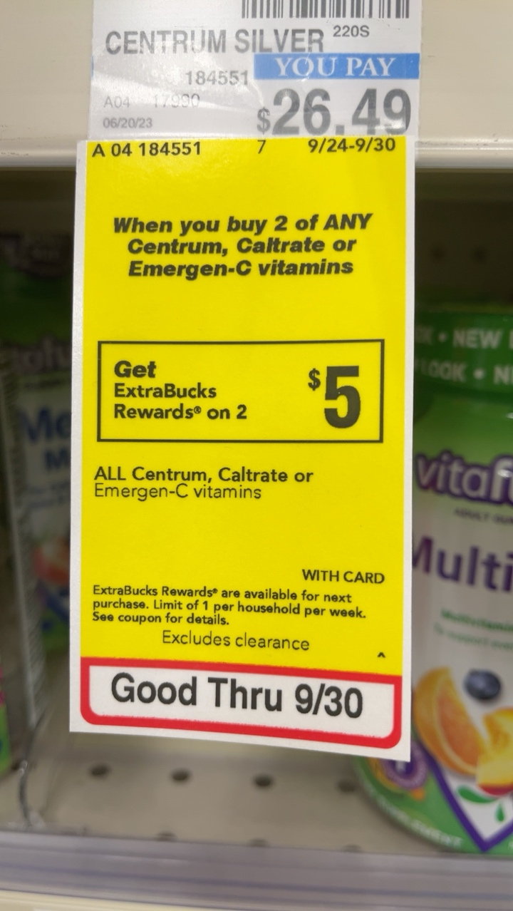
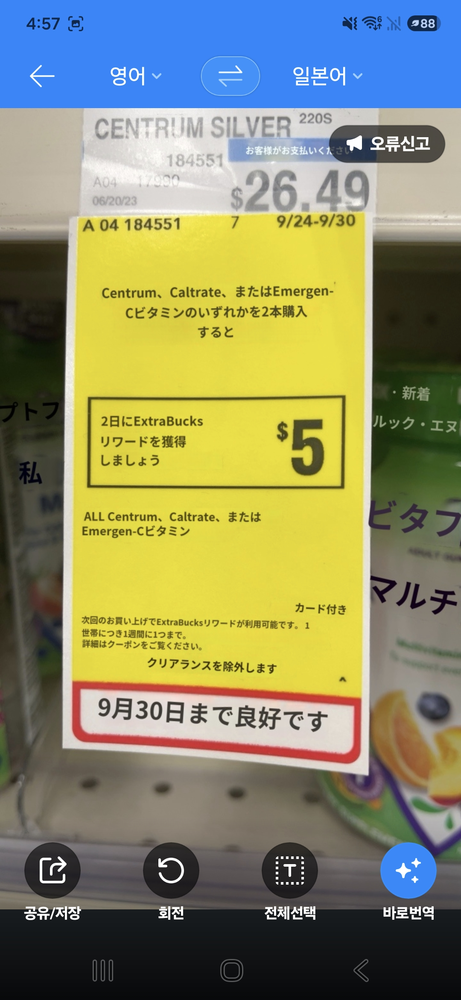
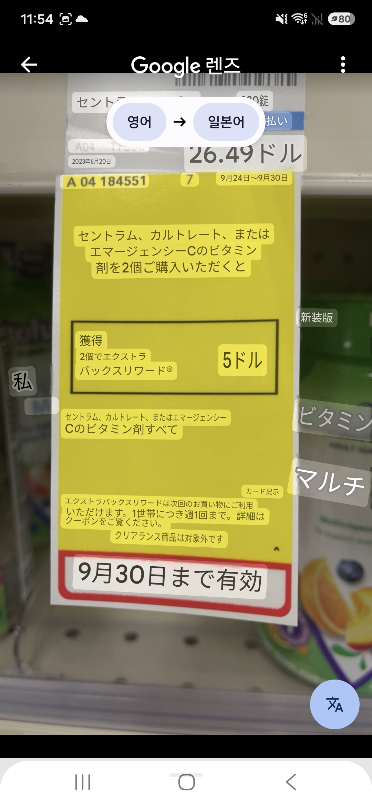

来自真实任务使用后的模型分析归档，已移除账号、客户任务 ID、本机路径与请求追踪号。保留原判断和理由，不代表人工金标准。非客户正式提交文件。
public-example-001 · EN_JA · qwen3.8-flash · 证据置信度 100%
| 维度 | 原模型建议 | 原归档理由 |
|---|---|---|
| 翻译 | B 胜 | B的日语翻译在准确性和自然度上显著优于A。A存在多处严重误译：将“2 of ANY”错误翻译为“2本”（2瓶）；将“on 2”（购买2件）错误翻译为“2日に”（在2天）；将“Good Thru”（有效期至）错误翻译为“良好です”（状态良好）。B的翻译则准确传达了“2個”（2件）、“有効”（有效）等核心信息，且使用了“ご購入いただくと”等更自然的敬语表达。 |
| 渲染 | B 胜 | B采用了高亮文本框叠加的渲染方式，虽然遮挡了部分原文，但排版整洁，字体清晰，且正确保留了所有数字和日期，视觉还原度较高。A采用原位替换，但存在明显的排版缺陷：顶部价格区域的翻译文字被截断（“お客様がお支払いください”不完整），且部分背景元素（如右侧商品上的文字）被错误翻译，影响了整体视觉的自然度。 |
原图摘要：一张CVS药店的黄色促销标签，内容为购买2件Centrum、Caltrate或Emergen-C维生素可获得5美元的ExtraBucks奖励，有效期至9月30日。
A 证据：存在严重语义错误：'ANY'漏译，'2 of'误译为'2本'，'on 2'误译为'2日'，'Good'误译为'良好'。顶部文字被截断。
B 证据：翻译准确自然，正确识别了数量单位'個'和有效期'有効'。采用高亮框渲染，清晰度高。


